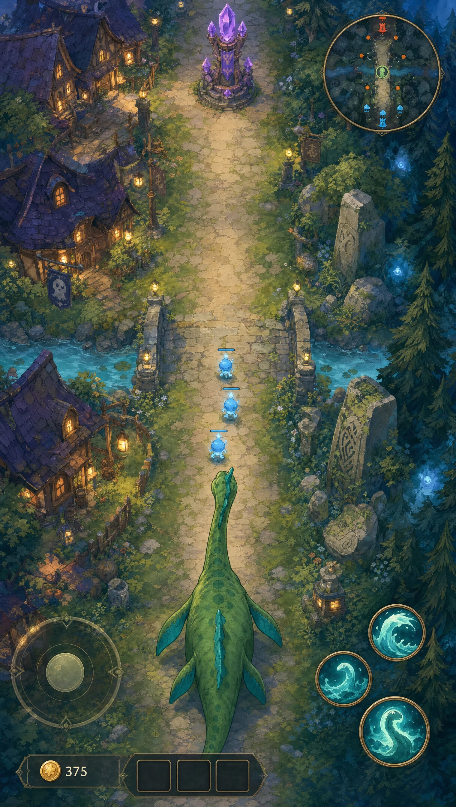
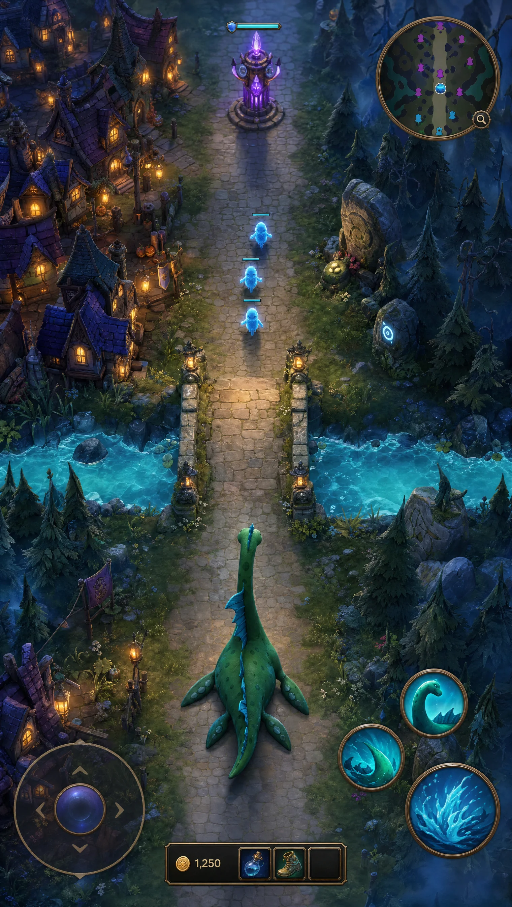
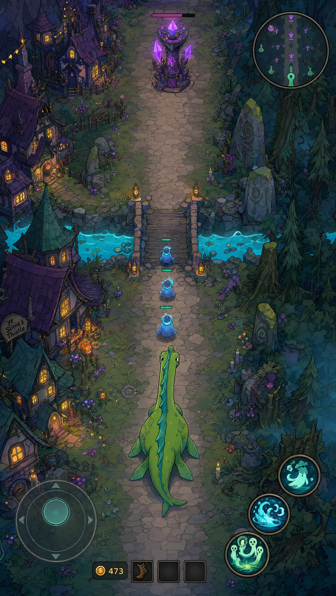

One arena. Three worlds.
Folklore, with
a different feeling.
Three visual directions for the same vertical-lane arena. Original monsters, the village and the deep woods, imagined through three animation styles.

Ghibli inspired
Soft painted scenery, mossy greens and warm lanterns. A mysterious forest you want to wander into.

Pixar inspired
Chunky silhouettes, tactile materials and expressive creatures. The most dimensional direction.

Rick and Morty inspired
Bold outlines, acid colors and strange little details. More mischievous, more unpredictable.